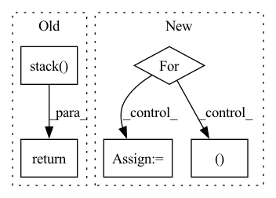

Pattern ID :7588
Before Change
kernel_sizes = (ctx.dims.pointwise_kernel, ctx.dims.outer_bottleneck_kernel, ctx.dims.inner_bottleneck_kernel)
if grad.ndim != 3 or last_size not in kernel_sizes:
return _shampoo(ctx, grad, step)
return jnp.stack( [_shampoo(ctx, grad[:, :, i], step) for i in range(last_size)], axis=-1)
def clip_norm(val: jnp.ndarray, min_norm: float) -> jnp.ndarray:
return jnp.maximum(jnp.sqrt(jnp.square(val).sum()), min_norm)After Change
preconditioner = Preconditioner(grad, ctx.optimizer.block_size)
new_preconditioners = []
for i, old_stat in enumerate(preconditioner.statistics_from_grad(grad)):
new_stat = ema(ctx, old_stat, step, 1 - ctx.optimizer.shampoo_beta2, f"statistics_{i}", True,
jnp.eye(old_stat.shape[0], dtype=ctx.model.storage_dtype) * ctx.optimizer.epsilon)
prev_p = get_param(ctx, f"preconditioner_{i}", old_stat.shape, dtype=ctx.model.storage_dtype,
init_val=jnp.eye(old_stat.shape[0], dtype=ctx.model.storage_dtype))
if ctx.is_initializing:
continue
new_p, error = matrix_inverse_pth_root(new_stat, preconditioner.exponent_for_preconditioner(),
ridge_epsilon=ctx.optimizer.epsilon)
new_p = select_preconditioner(error, new_p, prev_p)
new_preconditioners.append(new_p)In pattern: SUPERPATTERN
Frequency: 3
Non-data size: 5
Instances Fragment ID: 25272080
Project Name: homebrewnlp/homebrewnlp-jax
Commit Name: bf951740b4e76e5a2144d26015890e30aed83bb5
Time: 2022-07-06
Author: 39779310+ClashLuke@users.noreply.github.com
File Name: src/optimizer.py
M Class Name: AnonimousClass
N Class Name: AnonimousClass
M Method Name: shampoo(3)
N Method Name: shampoo(3)
M Parent Class:
N Parent Class:
M File Name: src/optimizer.py
N File Name: src/optimizer.py
M Start Line: 93
M End Line: 97
N Start Line: 70
N End Line: 89
Before Change
loop_vars=(0, initial_state["velocity"],
tf.TensorArray(tf.float32, num_steps)),
parallel_iterations=1)
return output.stack()
def evaluate(model, inputs):
Performs model rollouts and create stats.After Change
velocity = torch.squeeze(initial_state["velocity"], 0)
trajectory = []
for step in range(num_steps):
velocity, trajectory = step_fn(velocity, trajectory)
return torch.stack(trajectory)
Fragment ID: 25272067
Project Name: wwmark/meshgraphnets
Commit Name: 1ad048efb0f606f799674edb4d16a0554e54bf28
Time: 2021-10-24
Author: ruoheng.ma@gmail.com
File Name: cfd_eval.py
M Class Name: AnonimousClass
N Class Name: AnonimousClass
M Method Name: _rollout(3)
N Method Name: _rollout(3)
M Parent Class:
N Parent Class:
M File Name: cfd_eval.py
N File Name: cfd_eval.py
M Start Line: 26
M End Line: 44
N Start Line: 27
N End Line: 45
Before Change
kernel_sizes = (ctx.dims.pointwise_kernel, ctx.dims.outer_bottleneck_kernel, ctx.dims.inner_bottleneck_kernel)
if grad.ndim != 3 or last_size not in kernel_sizes:
return _shampoo(ctx, grad, step)
return jnp.stack( [_shampoo(ctx, grad[:, :, i], step) for i in range(last_size)], axis=-1)
def clip_norm(val: jnp.ndarray, min_norm: float) -> jnp.ndarray:
return jnp.maximum(jnp.sqrt(jnp.square(val).sum()), min_norm)After Change
preconditioner = Preconditioner(grad, ctx.optimizer.block_size)
new_preconditioners = []
for i, old_stat in enumerate(preconditioner.statistics_from_grad(grad)):
new_stat = ema(ctx, old_stat, step, 1 - ctx.optimizer.shampoo_beta2, f"statistics_{i}", True,
jnp.eye(old_stat.shape[0], dtype=ctx.model.storage_dtype) * ctx.optimizer.epsilon)
prev_p = get_param(ctx, f"preconditioner_{i}", old_stat.shape, dtype=ctx.model.storage_dtype,
init_val=jnp.eye(old_stat.shape[0], dtype=ctx.model.storage_dtype))
if ctx.is_initializing:
continue
new_p, error = matrix_inverse_pth_root(new_stat, preconditioner.exponent_for_preconditioner(),
ridge_epsilon=ctx.optimizer.epsilon)
new_p = select_preconditioner(error, new_p, prev_p)
new_preconditioners.append(new_p) Fragment ID: 25272066
Project Name: homebrewnlp/olmax
Commit Name: bf951740b4e76e5a2144d26015890e30aed83bb5
Time: 2022-07-06
Author: 39779310+ClashLuke@users.noreply.github.com
File Name: src/optimizer.py
M Class Name: AnonimousClass
N Class Name: AnonimousClass
M Method Name: shampoo(3)
N Method Name: shampoo(3)
M Parent Class:
N Parent Class:
M File Name: src/optimizer.py
N File Name: src/optimizer.py
M Start Line: 93
M End Line: 97
N Start Line: 70
N End Line: 89